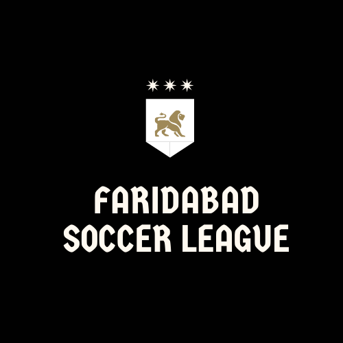
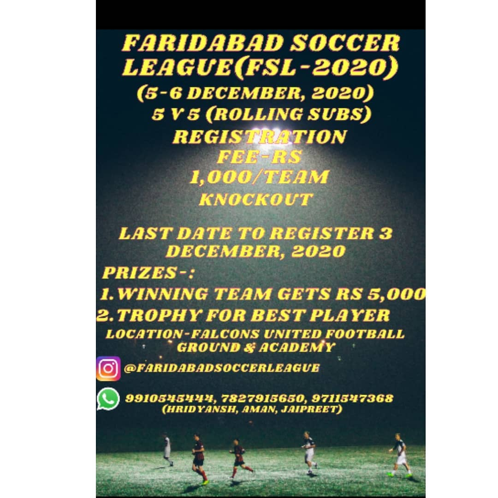
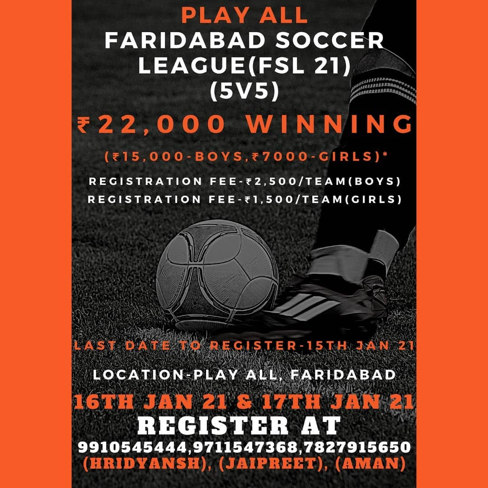

Faridabad Soccer League
Faridabad Soccer League(FSL) is a 5v5 football tournament organised at regular intervals by a trio consisting of Hridyansh Pareek, Jaipreet Singh and Aman Chauahan.
Participating teams in FSL 1(5-6th December, 2020)
- Falcons United 1
- Falons United 2
- Police Line Football Club
- FFC
- Volta Royals
- Stunners
- Creators
- Simp Army
- Forza FC
- Hooligan FC
- Young Brigade FC
- Nazi Party
- Street Strikers
- Eternal Kings
- Divine Strikers
- IPFA
- Red Storme FC
- Boom FC
- Athens FC
- Defaulters FC
- Resort FC
- Nahar Singh FC 1
- Nahar Singh FC 2
- Azad FC
FSL 1 was conducted at Falcons United Football Ground and Academy, Faridabad, the winners were Police Line FC and the best player award went to Gaurav Negi.The winning amount was 5,000 rupees which was later increased to 7,000 rupees
FSL 1 poster

Participating teams in FSL 2(16-17 January, 2021)
Men Teams
- L.Football Club
- Sector 12 FC
- Blasters FC
-
Greenfields FC B
- Siera Canyon
- Boom FC
- Nazi Party FC
- Ravagers FC
- Young Guns FC
- Galactico's FC
- Resort FC
- Fusion FC
- Divine Strikers FC
- Invincible United FC
- FC Barcelona
- Celtics FC
- Sindhi FC
- Azad FC
- Police Line FC
- FC Delhi 34
- Prince FC
- Shining Stars Boys
- Noids FC
- Greenfields FC A
- Desi Boys FC
- Sakht Launda FC
- Red Sox FC
FSL 2 was conducted at Play All, Faridabad, the winners were Police Line FC(Men's category) and the best player award went to Sahil.The winning amount was 15,000 rupees.
Women Teams
- Nahar Singh Women's FC
- Shining Stars Women's FC
- United Warriors FC
- United Women FC
- Azad Women's FC
The winners were United Warriors FC(Womens's category) and the best player award went to Priyanka.The winning amount was 7,000 rupees
FSL 2 poster
